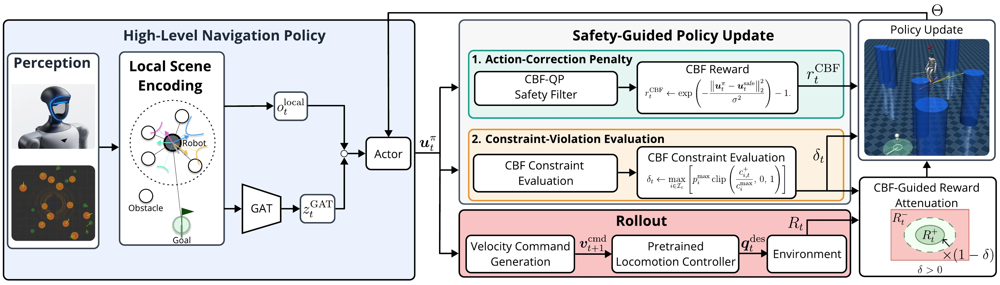
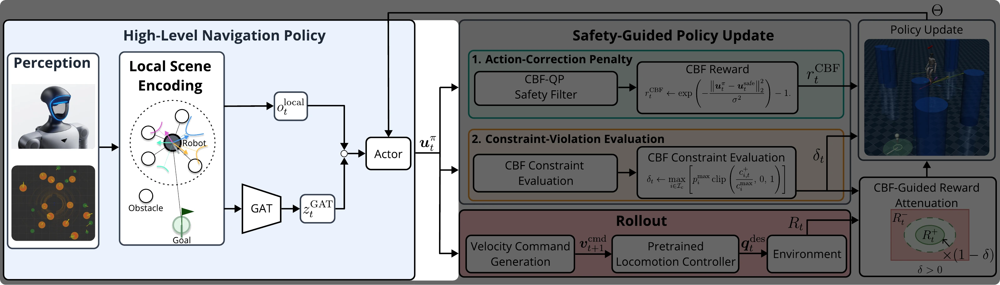
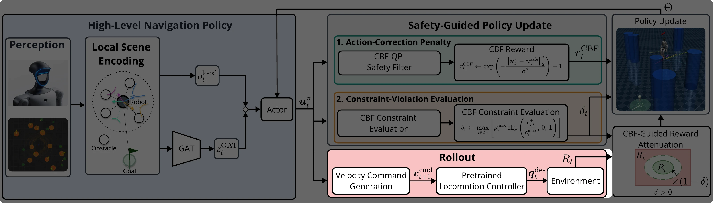
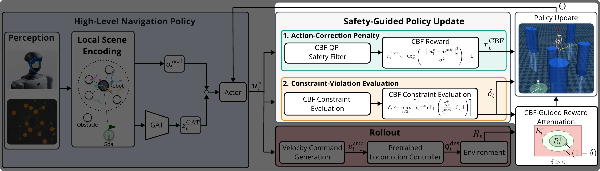
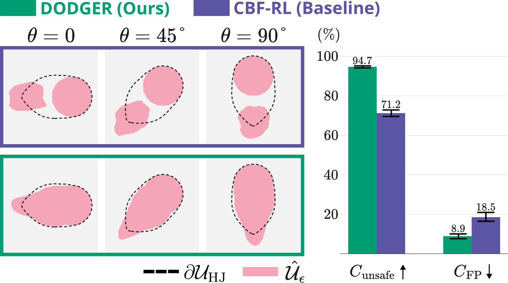
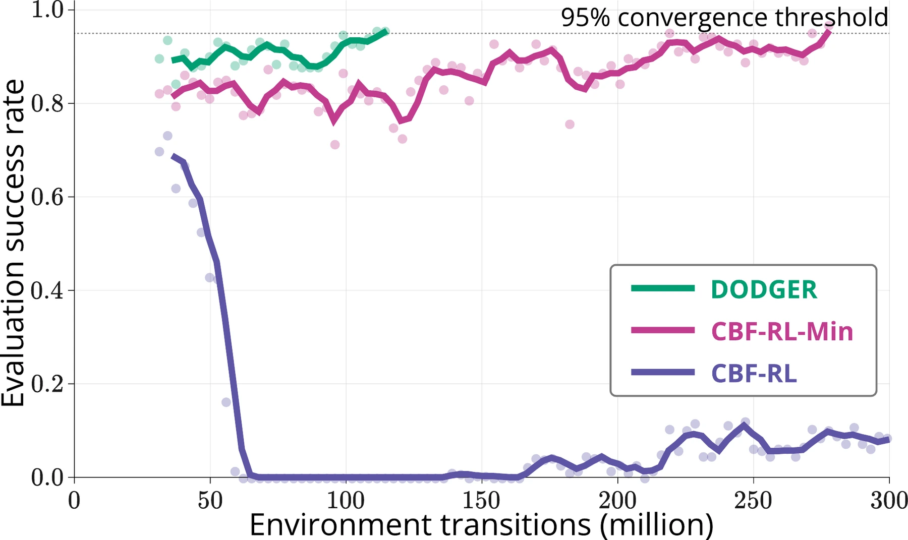

Abstract
Robots operating in human-centered environments must safely navigate among multiple dynamic obstacles to avoid collisions with people and surrounding infrastructure. Control barrier functions (CBFs) provide an effective mechanism for safety filtering, and recent CBF-based reinforcement learning (RL) methods embed such safety information into learned policies. However, executing only safety-filtered actions during training can restrict policy exploration, a limitation that becomes particularly consequential in dynamic scenes where safety depends on relative robot-obstacle motion. We propose DODGER, a safety-guided RL framework that directly executes policy-generated actions to drive training rollouts while using CBF-filtered references and constraint violations to shape the policy toward collision-avoidance behavior. We evaluate DODGER through a Dubins-car safety analysis and demonstrate goal-directed navigation among multiple dynamic obstacles in full-order humanoid simulation and real-world humanoid experiments using LiDAR-based perception, without a runtime safety filter.
Overall Framework




Hover over the marked paragraphs below to highlight each component. Tap the marked paragraphs below to highlight each component.
DODGER learns goal-directed navigation among multiple dynamic obstacles.
The robot, goal, and LiDAR-detected obstacles form a local interaction graph. A robot-centered graph attention encoder transforms this graph into a compact representation of the surrounding scene.
Training rollouts are driven by policy-generated actions, which are converted into velocity commands and executed by a fixed, pretrained locomotion controller.
During training, DPCBF-based filtered reference actions and constraint violations guide policy updates without replacing the policy actions used for environment interaction.
At deployment, the learned policy operates without an online safety filter.
Click to enlarge Tap to enlarge
Results
Learning Framework Evaluation


We evaluate DODGER’s learning framework at two complementary scales. On the low-dimensional Dubins-car benchmark, DODGER learns a critic-induced risk region that more closely matches the HJ reference unsafe set than CBF-RL, achieving 94.7 ± 0.93% unsafe-set coverage and an 8.9 ± 2.47% false-positive measure, compared with 71.2 ± 3.47% and 18.5 ± 4.62% for CBF-RL.
In full-order humanoid training with obstacle speeds up to 0.6 m/s, DODGER reaches the 95% convergence threshold after approximately 114 million environment transitions, whereas CBF-RL-Min requires approximately 277 million transitions and CBF-RL does not converge within 600 million transitions. When the maximum obstacle speed is increased to 0.8 m/s, DODGER remains the only method to converge, reaching the criterion after approximately 536 million transitions, while neither baseline converges within the extended budget of 1.2 billion transitions.
Together, these results support the benefit of preserving policy-driven exploration: DODGER learns a more accurate safety representation and converges more efficiently as dynamic-obstacle navigation becomes increasingly challenging.
Results
CBF Formulation Comparison
We compare DPCBF, C3BF, and a distance-based ECBF with yaw-rate regularization under the same DODGER training configuration.
DODGER (DPCBF)
Reaches the goal using less conservative safety guidance and effective line-of-sight (LoS)-based directional guidance.
Collision Cone CBF (C3BF)
Fails to reach the goal because of an overly conservative unsafe region.
Distance-Based ECBF + Yaw Regularization
Produces excessive and unnecessary rotational motion despite yaw-rate regularization.
Results
Real-Robot Experiments
We deploy DODGER on a Unitree G1 humanoid across four real-world scenarios involving multiple moving pedestrians, without using an online safety filter.
Scenario 1
The robot navigates through pedestrians moving against its direction of travel.
Scenario 2
Pedestrians move independently. Two nearby people are initially detected as one obstacle and later separate into two.
Scenario 3
A pedestrian repeatedly crosses the robot’s path to the goal.
Scenario 4
Multiple pedestrians move around the robot, creating a highly constrained scene with only a narrow safe passage toward the goal.